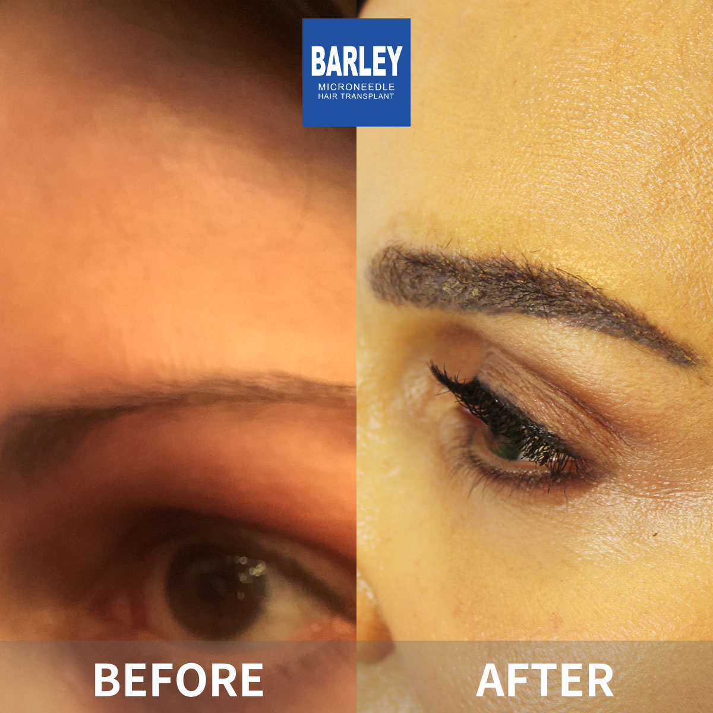
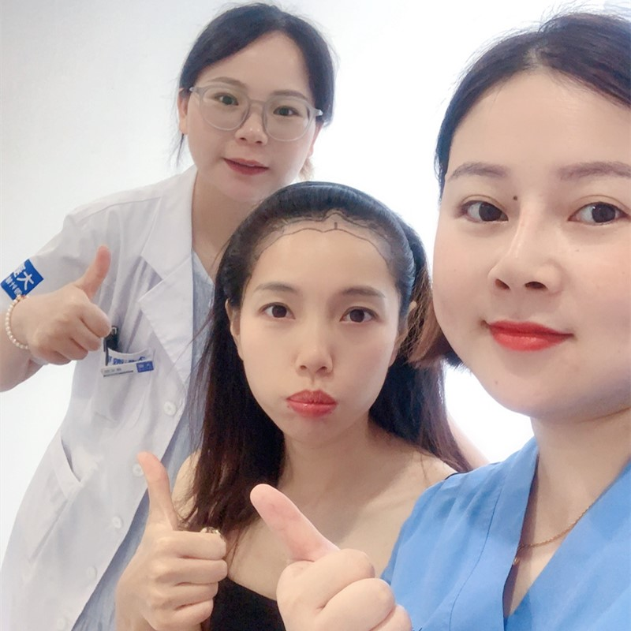
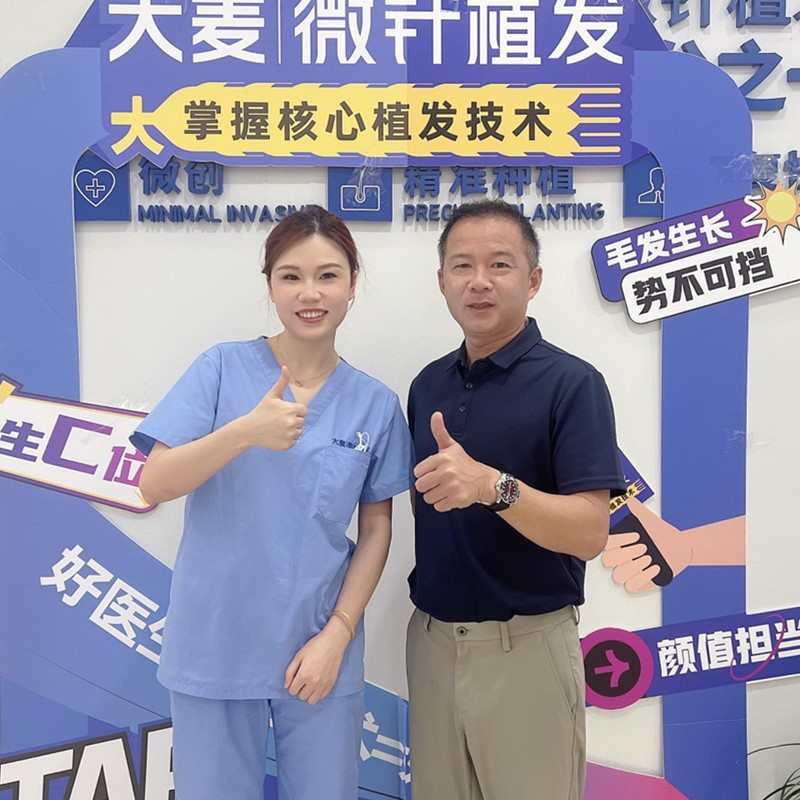
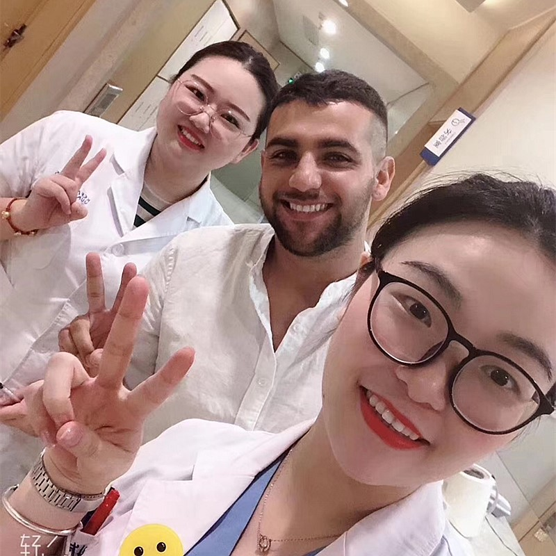

Understanding the difference between normal shedding and concerning hair loss
To some extent, hair loss is normal, but when the amount of hair loss exceeds the normal range, it is concerning. A person loses 50 to 100 hair strands per day on average, which is not concerning. This range can vary depending on the individual and his/her age, lifestyle, genetics, and other such factors. Hair loss is usually nothing to be concerned about. However, if you're wondering if your daily hair loss will lead to baldness, this guide will help you understand when you should be concerned.
Telogen Effluvium is a type of temporary hair shedding that occurs due to unexpected circumstances such as giving birth, sudden weight loss, stress, or high fever. It usually lasts six to nine months before stopping on its own or with proper care.
Alopecia is a more permanent hair loss that usually requires medical and hair restoration procedures to reverse. Not all hair shedding results in baldness, but genetic Male Pattern Baldness and Female Pattern Baldness typically require intervention.
Genetic Hair Loss: If hair loss runs in your family, you may experience a receding hairline (men) or thinning hair (women). Without treatment, this type of hair loss can lead to baldness.
Other Factors: Stress, medication side effects, hormonal changes, and lifestyle factors such as sudden weight loss or excessive use of styling tools can also weaken hair and contribute to hair loss.
When to Seek Help: Normal hair loss almost never leads to baldness. However, if you notice abnormal amounts of hair loss, consult a professional who can assess the root cause and recommend a treatment plan.
If you are experiencing an unusual amount of hair loss and are concerned that it will result in baldness, consult hair restoration experts. When you visit Barley Microneedle hospitals, our first priority is to thoroughly assess your hair loss level using the Hamilton-Norwood Scale (men) and Ludwig Scale (women).
Comprehensive evaluation of hair loss level and cause
Custom hair restoration plan based on your needs
Advanced Implanter technology for natural results
360-degree control for optimal density and direction
Our Microneedle methods' Implanter technology allows Barley doctors to control the density and direction at 360 degrees angles, resulting in natural hair restoration.
Contact us for a professional assessment and personalized treatment plan
15810155700
+86 13730143529
hairtransplant@qq.com
See the results that have earned our patients' lasting confidence




Real patients, real confidence restored

Patient proudly showing their natural-looking outcome

Patient celebrating their remarkable new look

Patient showcasing their refreshed, natural hairline

Patient revealing their impressive transformation

Overseas visitor delighted with results

Patient thrilled with their beautiful new hair

Satisfied patient with our medical team

Patient demonstrating their successful restoration
Real stories from real patients who chose Barley
"I was losing hair every day and panicked thinking I was going bald. After visiting Barley, they explained the difference between normal shedding and actual hair loss. Turns out I was fine, but they gave me great tips for maintaining healthy hair."
"I noticed excessive shedding for months and finally got it checked at Barley. They diagnosed early-stage hair loss and started treatment immediately. A year later, my hair is thicker than ever. Early detection made all the difference."
"The educational content on Barley's website helped me understand what's normal and what's not. When I did need treatment, their team was incredibly supportive. The microneedle transplant results look completely natural."
Modern, comfortable clinics designed to put you at ease

Equipped with the latest technology

Relax in our comfortable waiting area

Certified sterile environment

Confidential and professional discussions

Relaxing space for post-procedure rest

Warm welcome from our team
Honest answers to the questions patients ask most
Click to copy contact information
15810155700
+86 13730143529
hairtransplant@qq.com

Everyone's hair loss journey and solution are unique due to a variety of factors. Our hair restoration experts will assist you in determining the root cause and the best solution for your hair restoration plan.